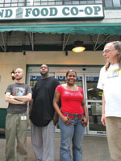

East End Runaround - Co-op workers fear their union effort will be consulted to death
Submitted on Fri, 07/21/2006 - 2:05am
By Melissa Meinzer - Pittsburgh City Paper, July 20, 2006
For many workers at the East End Food Co-op, the road to union recognition gets longer with every step they trudge. Although union supporters say a majority of workers have voted in favor of a union, the co-op is declining to recognize the election, in part because of a rival union effort begun by a former manager. And there is another source of controversy: the co-op’s hiring of Braun Consulting — an organization seen by many employees as anti-union.
Workers at the Point Breeze natural foods outlet, who have been trying unsuccessfully to unionize for years, thought that their most recent push would be enough to have management recognize the Industrial Workers of the World as their union. They say that more than half of the 55-person staff signed union authorization cards between May 19 and June 7. While members of the Workers Committee, the employee group heading up the IWW push, won’t reveal just how many signed cards they have, committee member Evan Wolfson calls it “a clear majority.”
The Workers Committee began pushing for management recognition of the century-old IWW in May to address concerns of high employee turnover, working conditions and raises they felt were slow in coming. “We’re looking for a peer-run task force that everyone can participate in,” says stockroom Manager Jim M. Steiner, who supports the IWW.
The co-op’s board had resisted a similar union effort in 2003. Today, the board is more hands-off, leaving Co-op General Manager Rob Baran in charge of day-to-day operations — and dealing with the union drive.
“We stepped out,” says board president Mike “Q” Roth. “To step back in would cause confusion as to whose role is what.”
On July 10, the signed IWW union cards were verified by a third party — Garfield-based social justice organization The Thomas Merton Center. Co-op management could have recognized the IWW based on the cards alone — had not a rival union drive suddenly appeared two weeks earlier, started by a former management employee (see “Co-op or Co-optation,” July 6).
On June 28, co-op supplement buyer Dan Denlinger began circulating a call to form a different union at the co-op — the United Co-operative Workers, which Denlinger created himself. This forced management to consider the brand-new union as a potentially equally valid representative of the co-op staff, or risk breaking federal law.
Denlinger’s fledgling UCW has the same legal protection as the venerable IWW, according to Mike Joyce, assistant to the regional director of Pittsburgh’s branch of the National Labor Relations Board. The recognition of one union via signed cards alone isn’t valid once another union enters the picture, he says.
“I feel like this other union is being used as a crutch,” says Wolfson, adding that, in light of high turnover among co-op workers, any delay could be magnified by the need to have a new crop of employees decide whether or not to sign union cards.
“If the card check would have gone through it would have been done and over,” says Steiner.
Denlinger had been on the co-op’s management team for about five weeks before demoting himself (with no reduction in pay) to his previous level. He resigned after speaking out about the union at a June 27 co-op meeting — something management is forbidden to do.
“I went home that night and it was like a little miniature Big Bang within myself: whoom!” he says. “I had a vision of this [new union], designed for us.” At first he announced that his union’s dues would be a penny a month, in contrast to the IWW’s sliding scale of between $6 and $18 a month. He later backtracked to say that there would be other fees involved.
IWW organizers suspect that the UCW was ginned up to sow divisiveness and to create obstacles to recognizing the IWW.
Denlinger acknowledges that his timing might seem a bit suspect “It definitely walks like a duck.” But, he says, “That is the only way it resembles what’s been alleged” by IWW organizers.
Today, Denlinger reports, up to eight other employees are on board with his union. Presenting employees with only one option, he says, is far from democratic.
Baran, the co-op’s general manager, says he has been relying on a stable of advisors to help him through the union drive: other general managers at co-ops across the country, labor law lawyers and professors, and Bob Braun, of Braun Consulting, hired on June 28. Before that, he’d been informally consulting with Braun.
“Braun is definitely anti-union,” says Workers Committee member Stacy Clampitt (and sometime City Paper photographer). Fellow committee member Wolfson cites as evidence the latest online Braun newsletter, which includes information for employers on how to resist unionization: “A positive environment with open communication and fairness can be crucial in preventing or defeating an organizing campaign,” says the newsletter. It warns companies to watch “the distinction the NLRB makes between ‘work time’ and ‘work hours.’ The NLRB says it’s OK to prohibit employees from engaging in union activity under one but illegal under the other.”
“The co-op hasn’t asked me to defeat the union or interfere with the union,” Bob Braun says by phone from his Seattle office. “I don’t know what ‘anti-union’ means. That’s an emotional term that people evoke. It’s like saying you’re anti-air.”
Braun says that all three of Braun Consulting’s employees are Teamsters in Washington state. He declined to specify to which local they belonged, preventing confirmation among the many Seattle locals.
“It’s not like we’re just doing what other people tell us,” says the co-op’s Baran, defending his use of Braun. “We’re making our own decisions. We want them to be informed decisions.”
Baran and Braun both say they are committed to ushering in a legal, fair and democratic unionizing process, and that a secret-ballot election is the best way to do so.
Co-op workers in favor of the IWW see such an election, pitting their union against Denlinger’s newly minted effort, as just another way to delay the recognition of a union at the Co-op.
“There are loopholes and ways people can fight union campaigns,” says Baran. “We are not going to do that. It’s staff’s decision. The fairest thing for us to do is to have an election.”
Who will oversee such an election, and when, remains to be determined.